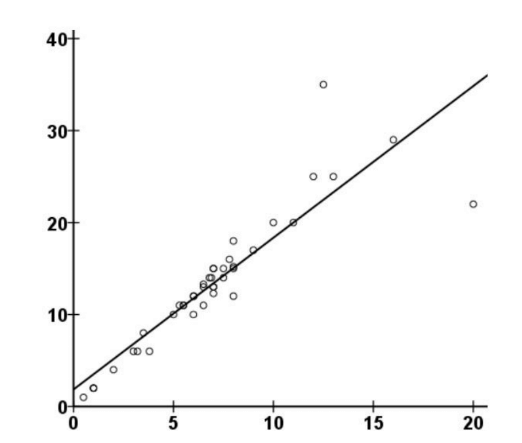
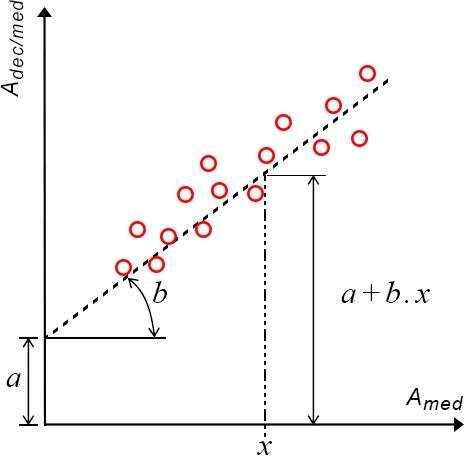

E aí gente, tudo bem?
Como vocês sabem, a estatística é uma das áreas de estudo mais valiosas para nós cientistas. E por isso, tenho tentado estudar cada vez mais por meio dessas ferramentas: material de pesquisa, matérias optativas do Depto. de Estatística e conversas com Júlia Nosralla (minha amiga que cursa estatística).
Porém, como devem imaginar também, a estatística é uma área gigantesca que abrange muitas áreas do conhecimento. Meu interesse maior é voltado apenas à Estatística descritiva, focada em pesquisas biológicas. Por isso este post, já que o normal é trabalharmos com dados quantitativos. ex: como o tamanho da planta é influenciado pela porcentagem de um nutriente no solo.
Tá bom, depois dessa recapitulação e com o título do post, já devem supor a importância da análise de influência entre variáveis. Vamos destrinchar esse exemplo que eu dei ali em cima sobre tamanho da planta e nutrientes no solo. Beleza, imaginem que eu crie um gráfico de dispersão no qual:

Se analisarmos o gráfico, notamos uma relação entre as variáveis instantaneamente, já que a reta que é traçada tem uma inclinação. Beleza, mas o que podemos inferir logo de cara? A inclinação é positiva, né? Então, à medida que aumentamos a porcentagem de nutrientes no solo, a planta tende a crescer mais.
PS: cuidado com o pensamento de que, se aumentarmos infinitamente a concentração, a planta cresce infinitamente também. Não é assim que funciona. Existem limites biológicos, e a literatura científica geralmente mostra bem até onde a relação se mantém linear.
A próxima pergunta intuitiva é: qual o tamanho dessa relação? Ou seja, quanto objetivamente aumenta o tamanho da planta?
Podemos calcular o coeficiente de correlação (r), que varia no intervalo: -1 ≤ r ≤ 1.
Não, o mundo não é um bombom. Ou seja, na vida real correlações perfeitas são quase inexistentes. Temos várias outras variáveis que influenciam e que podem modificar o resultado.
Mas ainda assim podemos ajustar nosso modelo. É aí que entra a regressão: ela tenta encontrar a reta que melhor descreve a relação entre as variáveis e nos permite fazer inferências.
A equação da regressão linear simples é:
y = A + Bx
Ou seja, B é a medida da inclinação da reta: se B > 0, temos tendência positiva; se B < 0, tendência negativa.

Calma, eu ainda estou estudando essa possibilidade, e planejo fazer um post sobre o coeficiente de Spearman (que mede relações monotônicas, não necessariamente lineares).
Aguarde os próximos capítulos!
Obrigado pela atenção de sempre!!!
Att. Jomaserver